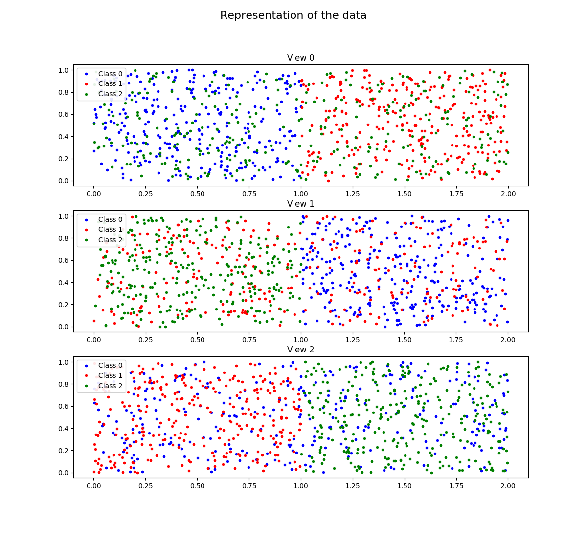
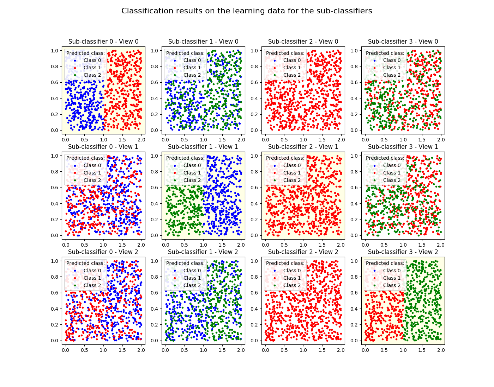

Note
Click here to download the full example code
Mumbo 3 views, 3 classes example
In this toy example, we generate data from three classes, split between three two-dimensional views.
For each view, the data are generated so that the points for two classes are well seperated, while the points for the third class are not seperated with the two other classes. That means that, taken separately, none of the single views allows for a good classification of the data.
Nevertheless, the MuMBo algorithm take adavantage of the complementarity of the views to rightly classify the points.
- 
- 
Out:
After 4 iterations, the MuMBo classifier reaches exact classification for the
learning samples:
- iteration 1, score: 0.6666666666666666
- iteration 2, score: 0.6666666666666666
- iteration 3, score: 0.8422222222222222
- iteration 4, score: 1.0
The resulting MuMBo classifier uses four sub-classifiers that are wheighted
using the following weights:
estimator weights: [0.54930614 0.78652877 0.27471838 0.93876455]
The first sub-classifier uses the data of view 0 to compute its classification
results, the second and third sub-classifiers use the data of view 1, while the
fourth one uses the data of view 2:
best views: [0 1 1 2]
The first figure displays the data, splitting the representation between the
three views.
The second figure displays the classification results for the sub-classifiers
on the learning sample data.
/home/dominique/projets/ANR-Lives/scikit-multimodallearn/examples/mumbo/plot_mumbo_3_views_3_classes.py:121: UserWarning: Matplotlib is currently using agg, which is a non-GUI backend, so cannot show the figure.
plt.show()
import numpy as np
from multimodal.boosting.mumbo import MumboClassifier
from matplotlib import pyplot as plt
def generate_data(n_samples, lim):
"""Generate random data in a rectangle"""
lim = np.array(lim)
n_features = lim.shape[0]
data = np.random.random((n_samples, n_features))
data = (lim[:, 1]-lim[:, 0]) * data + lim[:, 0]
return data
seed = 12
np.random.seed(seed)
n_samples = 300
view_0 = np.concatenate((generate_data(n_samples, [[0., 1.], [0., 1.]]),
generate_data(n_samples, [[1., 2.], [0., 1.]]),
generate_data(n_samples, [[0., 2.], [0., 1.]])))
view_1 = np.concatenate((generate_data(n_samples, [[1., 2.], [0., 1.]]),
generate_data(n_samples, [[0., 2.], [0., 1.]]),
generate_data(n_samples, [[0., 1.], [0., 1.]])))
view_2 = np.concatenate((generate_data(n_samples, [[0., 2.], [0., 1.]]),
generate_data(n_samples, [[0., 1.], [0., 1.]]),
generate_data(n_samples, [[1., 2.], [0., 1.]])))
X = np.concatenate((view_0, view_1, view_2), axis=1)
y = np.zeros(3*n_samples, dtype=np.int64)
y[n_samples:2*n_samples] = 1
y[2*n_samples:] = 2
views_ind = np.array([0, 2, 4, 6])
n_estimators = 4
clf = MumboClassifier(n_estimators=n_estimators)
clf.fit(X, y, views_ind)
print('\nAfter 4 iterations, the MuMBo classifier reaches exact '
'classification for the\nlearning samples:')
for ind, score in enumerate(clf.staged_score(X, y)):
print(' - iteration {}, score: {}'.format(ind + 1, score))
print('\nThe resulting MuMBo classifier uses four sub-classifiers that are '
'wheighted\nusing the following weights:\n'
' estimator weights: {}'.format(clf.estimator_weights_))
print('\nThe first sub-classifier uses the data of view 0 to compute '
'its classification\nresults, the second and third sub-classifiers use '
'the data of view 1, while the\nfourth one uses the data of '
'view 2:\n'
' best views: {}'. format(clf.best_views_))
print('\nThe first figure displays the data, splitting the representation '
'between the\nthree views.')
styles = ('.b', '.r', '.g')
fig = plt.figure(figsize=(12., 11.))
fig.suptitle('Representation of the data', size=16)
for ind_view in range(3):
ax = plt.subplot(3, 1, ind_view + 1)
ax.set_title('View {}'.format(ind_view))
ind_feature = ind_view * 2
for ind_class in range(3):
ind_samples = (y == ind_class)
ax.plot(X[ind_samples, ind_feature],
X[ind_samples, ind_feature + 1],
styles[ind_class],
label='Class {}'.format(ind_class))
ax.legend(loc='upper left', framealpha=0.9)
print('\nThe second figure displays the classification results for the '
'sub-classifiers\non the learning sample data.\n')
fig = plt.figure(figsize=(14., 11.))
fig.suptitle('Classification results on the learning data for the '
'sub-classifiers', size=16)
for ind_estimator in range(n_estimators):
best_view = clf.best_views_[ind_estimator]
y_pred = clf.estimators_[ind_estimator].predict(
X[:, 2*best_view:2*best_view+2])
background_color = (1.0, 1.0, 0.9)
for ind_view in range(3):
ax = plt.subplot(3, 4, ind_estimator + 4*ind_view + 1)
if ind_view == best_view:
ax.set_facecolor(background_color)
ax.set_title(
'Sub-classifier {} - View {}'.format(ind_estimator, ind_view))
ind_feature = ind_view * 2
for ind_class in range(3):
ind_samples = (y_pred == ind_class)
ax.plot(X[ind_samples, ind_feature],
X[ind_samples, ind_feature + 1],
styles[ind_class],
label='Class {}'.format(ind_class))
ax.legend(title='Predicted class:', loc='upper left', framealpha=0.9)
plt.show()
Total running time of the script: ( 0 minutes 1.313 seconds)